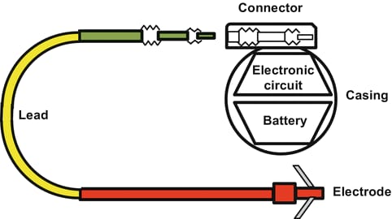

Anatomy
Pulse generator: This is the main component of the pacemaker and contains a small computer, a battery, and electronic circuitry. It is responsible for generating electrical impulses that are delivered to the heart to regulate the heartbeat. The pulse generator is typically made of titanium or other biocompatible materials and is designed to last for several years.
Leads: The leads are thin wires that are connected to the pulse generator and extend into the heart. They are responsible for delivering the electrical impulses to the heart muscles. There can be one or two leads depending on the type of pacemaker. The leads are coated with insulation to prevent electrical signals from being delivered to other areas of the body.
Battery: The battery is a small lithium-ion battery that is housed within the pulse generator. The battery provides power to the pacemaker and can last for several years depending on the type of pacemaker and the settings programmed into it
Working
Your heart has its own electrical system, which tells your heart'chambers when it's their turn to squeeze. When your heart's electrical system malfunctions, your heart's chambers may squeeze in the wrong order or squeeze too weakly to provide enough blood to your body. Pacemakers use electrical impulses to correct these kinds of malfunctions.
Types

Depending on the heart problem, a specific type of pacemaker — with anywhere from one to three wires (called leads) — may be used. Types of pacemakers include:
Leadless pacemaker: A small pacemaker (about the size of a large pill) inserted using a catheter-based procedure. This device is attached to an inner wall of your heart, which means it doesn't need to use any wires.
Single-chamber pacemaker: Uses a single wire attached to one chamber of your heart.
Dual-chamber pacemaker: Uses two wires attached to two chambers of your heart.
Biventricular pacemaker: Uses three wires, two of which attach to the lower chambers (called ventricles) of your heart, and a third connected to the right upper chamber (the right atrium). This is also known as cardiac resynchronization therapy (CRT).
Your healthcare provider may recommend a similar device called an implantable cardioverter defibrillator (ICD). Though it isn’t a pacemaker, these are often used with related heart conditions like ventricular tachycardia and ventricular fibrillation.
Signs
Talking to your healthcare provider about your concerns or symptoms is the first step to determining if you have health problems that can be treated with a pacemaker. Some of the symptoms you should tell your healthcare provider about include:
- Chest pain (also known as angina).
- Tachycardia (pronounced “tacky-cardia”): This is an unusually fast heartbeat (more than 100 beats per minute).
- Bradycardia (pronounced braid-y-cardia): This is an unusually slow heartbeat (fewer than 60 beats per minute).
- Irregular heartbeat (arrhythmia): A heartbeat that skips beats or adds in extra beats.
- Heart palpitations: This happens when you can feel your heartbeat in a way that’s unpleasant (it might feel like your heart is “flip-flopping” or pounding in your chest).
- Shortness of breath, especially when you’re more active.
- Unexplained dizziness or lightheadedness, nausea or fainting.
- Unexplained confusion.
- Swelling in your ankles, legs and abdomen.
- Needing to urinate multiple times at night.